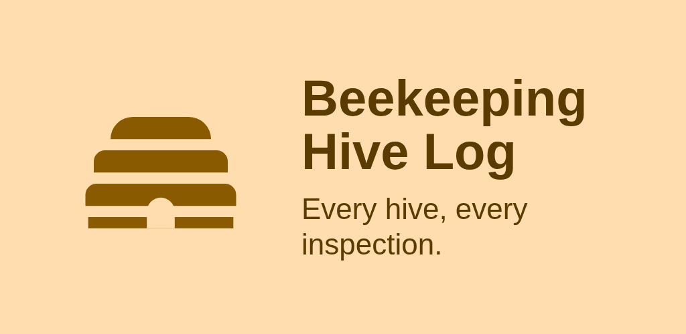
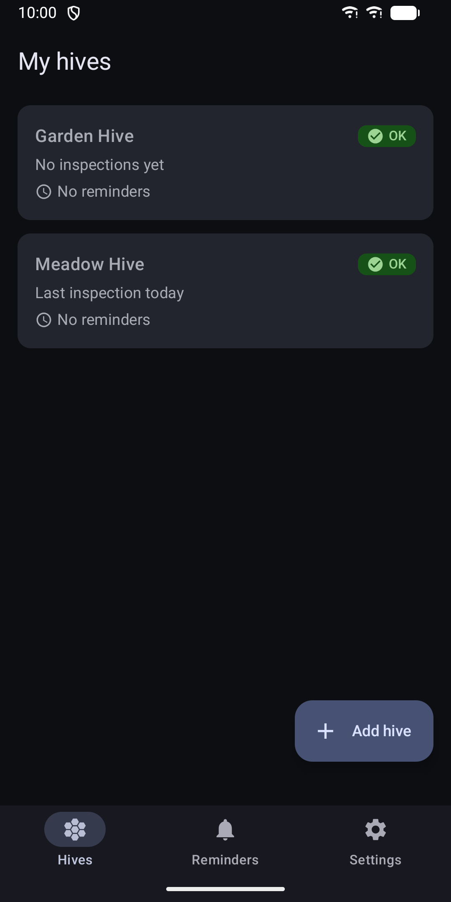
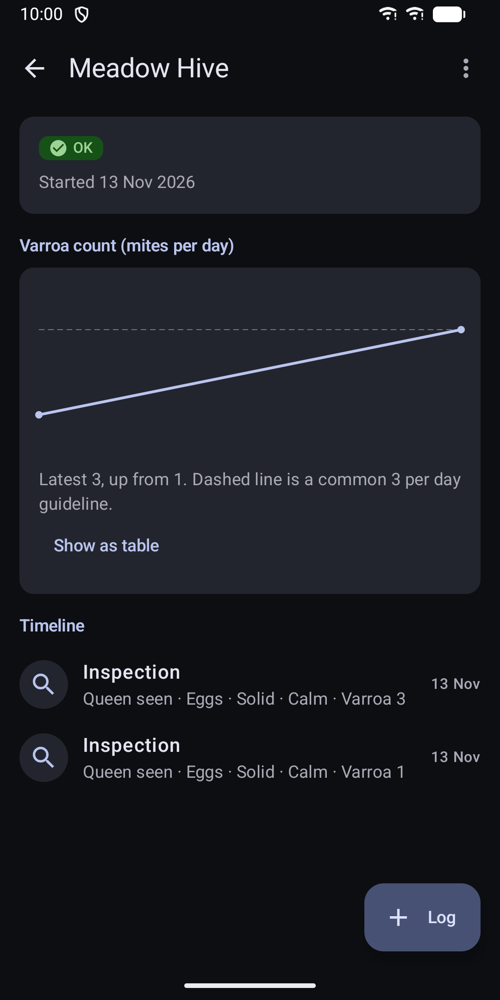
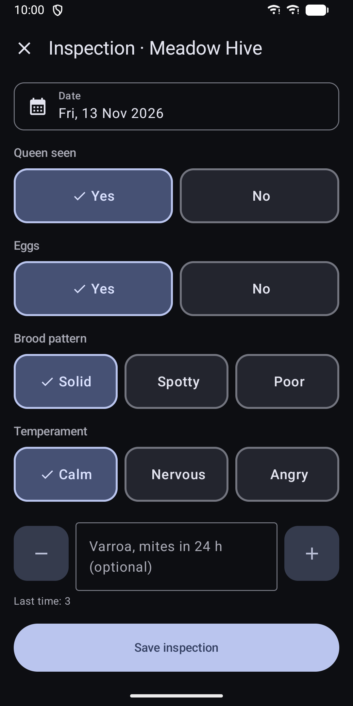
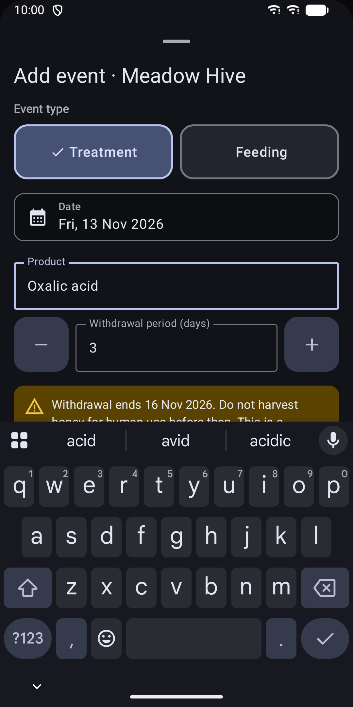
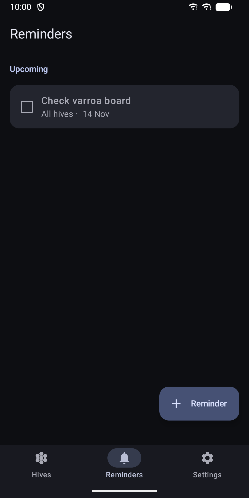
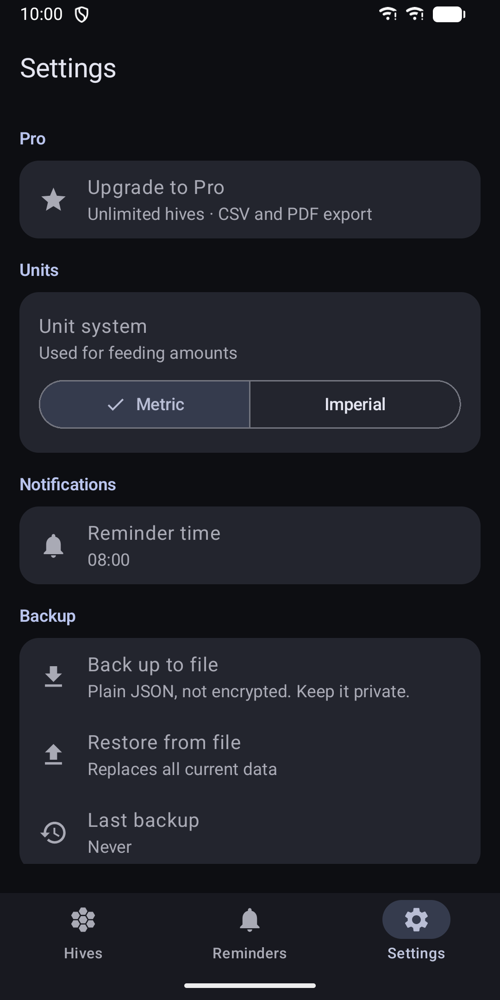
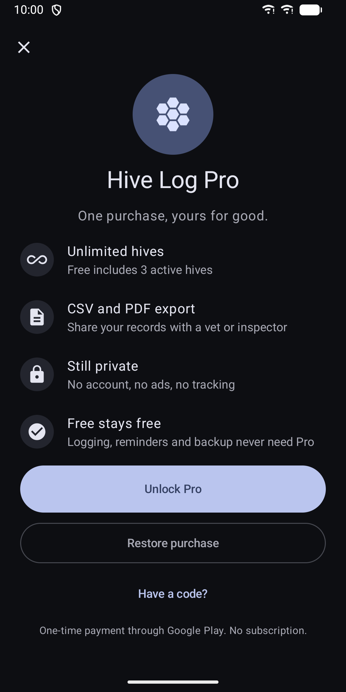

Hive Log: Beekeeping Journal
Log hive inspections, treatments and feedings, track varroa, set reminders.








About
Beekeeping Hive Log is a simple inspection log for backyard beekeepers. It works without an account and keeps all your data on your device. FAST INSPECTIONS, EVEN WITH GLOVES - Large buttons for queen seen, eggs, brood pattern and temperament - Optional varroa count with a minus and plus stepper - Answers from the last inspection are filled in, so a routine check takes a few taps EVERYTHING PER HIVE - One timeline per hive with inspections, treatments and feedings - Varroa trend chart with a guideline line at 3 mites per day, plus a text summary and a table view - Hive status at a glance: OK, needs attention, or in a withdrawal period - Archive hives you no longer keep without losing their history TREATMENTS AND FEEDING - Log treatments with a withdrawal period. The app shows a warning until it ends and can remind you on the end date. It never blocks you. - Log feedings: syrup 1:1, syrup 2:1, fondant or pollen patty - Metric or imperial units REMINDERS - One-off reminders or repeats every N days - Notifications at a time you choose, 08:00 by default - Home screen widget with your next reminders and the hives that need attention YOUR DATA STAYS ON YOUR DEVICE - The app has no internet permission and sends nothing anywhere - No account, no analytics - Backup and restore to a file you pick. The backup is plain JSON and not encrypted, so keep it somewhere private. FOR EVERY SCREEN - Phones and tablets, with a list and detail view side by side on larger screens - Light and dark theme follow your system setting - Screen reader labels, large touch targets and high-contrast support FREE AND PRO Included without purchase: up to 3 active hives, all logging, reminders, the widget and backup. Archived hives do not count towards the 3. Pro is a single purchase through Google Play, not a subscription. It unlocks unlimited hives and CSV and PDF export that you can share with a vet or inspector. The varroa guideline line is a display hint, not treatment advice. Follow local regulations and product labels for treatments and withdrawal periods.